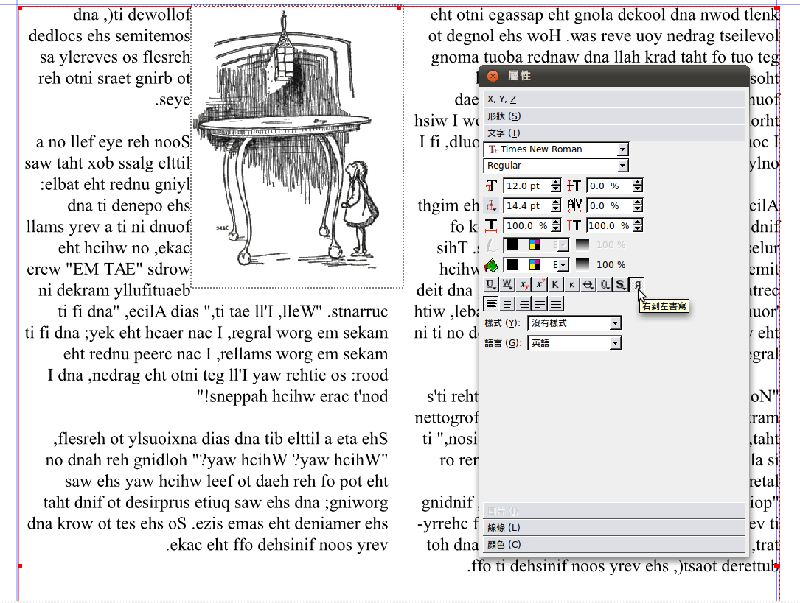
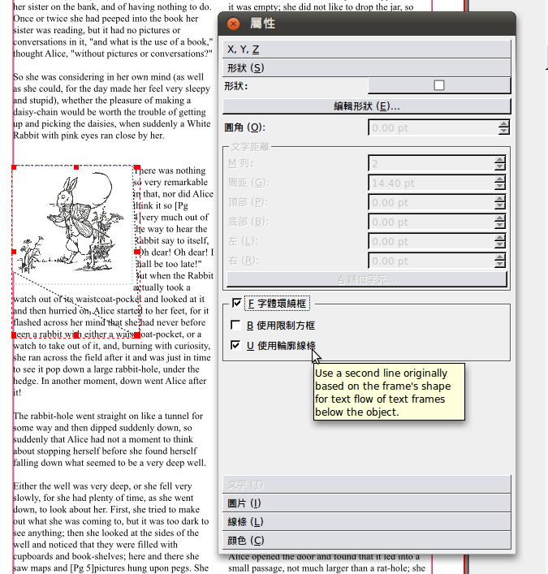

也紀念我們永遠的朋友 李士傑先生（Shih-Chieh Ilya Li）。
用自由軟體 Scribus 來輸出文件（5）- 文字應用
本篇著重在 Scribus 的文字處理功能，延續本系列文章中的首篇《用自由軟體 Scribus 來輸出文件（1）- 基本操作》，繼續講解排版軟體 Scribus 中的文字處理功能。另外延伸上一篇文章《用自由軟體 Scribus 來輸出文件（4）- 製作模板並轉為 PDF 輸出》提及的 PDF 輸出功能，本文後半段將介紹如何加上 PDF 註釋的功能。
在這裡先回應先前文章的讀者回應 (https://www.openfoundry.org/en/foss-programs/8211--scribus-3-poster-and-manual-#comment-96-)，關於 Ｗindows 作業系統下 Scribus 的中文字型處理。由於筆者先前有在 Windows 作業系統上使用 Scribus 的經驗，除了得提防偶爾當機外，大部分時間使用愉快。下面操作使用作業系統為 Windows Vista，Scribus 版本 1.3.3.12 。
圖 1 為 Windows 作業系統下的中文字型顯示狀況，使用字型從上而下依序為標楷體、新細明體、微軟正黑體、微軟雅黑體、教育部標準宋體、cwTeX 仿宋體、王漢宗隸書體、王漢宗中仿宋簡 8 種字體。
▲圖 1
手動文字框及連字框
從國外電子書網站 Project Gutenberg 中，找到已經歸屬於公共資源、可自由下載利用的 Alice’s Adventures in Wonderland 這本書的文字內容以及當時出版所附上的插圖 (https://www.gutenberg.org/ebooks/19033)。
首先，先來介紹如何設計一本書的標題及封面；除了標題外，另外加上出版時所繪製的封面圖。這部分並不困難，若不熟悉的讀者，建議參考先前的文章教學，加上文字框及圖片框，就完成了。
▲圖 2
接著我們匯入從網站上存下來的文件檔。Scribus 能接受 txt、odt、html 檔等開放格式，非開放格式的 doc 檔則不能直接匯入，若匯入 doc 檔則會出現亂碼，因此建議先存成純文字檔後再匯入 Scribus 中。
▲圖 3
匯入文字時，往往會發現一個文字框裝不下一整篇文章，需要用多個文字框接續才能解決相關問題，但將文章拆開成幾個部份，一個一個貼到文字框中十分麻煩，Scribus 有個功能叫「串聯文字框」可以解決這樣的問題。
當一個文字框匯入文字後，若還有多餘的文字無法容納進去，文字框右下角會出現一個中間有個叉叉的正方形符號，代表著還有剩下的文字沒有在框格中顯現出來，必須新增另一個文字框，再使用串聯文字的按鈕。
使用串聯文字的方法：必須先點選舊的文字框，按〔串聯文字框〕，接著點選新增的文字框，這樣就完成兩個文字框的連結。
▲圖 4
連結後的兩個文字框間可以看到箭頭表示文字流動的方向。如果看不到，可點選【檢視】→【顯示文字鍵】，就會顯示箭頭了。
i
▲圖 5
你看，Scribus 是不是很方便啊！不必自行分配各個文字框的字數，只要將文字框連接好，文字就會依序從一個文字框串連到另一個文字框。若要修改文章，也不必再重新排版，只要管文字配置的板面即可。
M 列
接下來我們要介紹「M 列」，「M 列」其實指的是文字框中的欄數。
選好想要改變欄數的文字框，按右鍵→【屬性】→「形狀」→「文字距離」，將「M 列」數值從 1 改為 2。
▲圖 6
Ｍ 列中設為 2 後的情形。一頁中會分成兩欄，就像是大學中英文教科書的排版。
▲圖 7
其他文字編輯
Lewis Carroll 最愛玩的文字遊戲，也可藉由 Scribus 排版出來，但需要不斷地按空白鍵，讓文字如同梯子般往下滑動。
▲圖 8
圖 9 使用〔右到左書寫〕功能，可以讓文字排列左右顛倒。對於英文文章來說，仍可以看出各別字母，但組合成的單字多半時候並不具有意義。此功能對於中文文字比較有意義，能夠排出由右至左書寫的文章，如古文。

▲圖 9
【屬性】中「X, Y, Z」中有〔水平翻轉〕按鈕，讓整個文字框 180 度旋轉。注意與圖 9 的差別。
▲圖 10
長按「刪除線 (Strike Out)」按鈕，會出現 2 個數值可以調整－刪除線的寬度（圖 11）以及刪除線的位置（圖 12）。
▲圖 11
▲圖 12
圖片的編輯
接著要介紹圖片如何搭配文字，講解圖片的編輯。將說明文繞圖以及圖片框的編輯。依舊以 Alice Adventure in Wonderland 為範例。
先將圖片框以及圖片插入後，按右鍵→【屬性】，變更「X-縮放」以及「Y-縮放」的百分比數，即能改變圖片大小。將鏈條點選即可按原有比例縮放。
▲圖 13
勾選「縮放到框體大小」，就會將插入的圖片縮放到圖片框的大小；勾選「按比例」會維持圖片的長寬比。
▲圖 14
按右鍵，【屬性】→「形狀」，勾選「字體環繞框」，但文字框的圖層必須低於圖片框的圖層，如此文字才會環繞圖片框。
▲圖 15
【屬性】中「形狀」→「編輯形狀」，可以自由編輯形狀，想要什麼形狀，就可以是什麼形狀。圖 12 只是簡單移動四個控制點，把它變成我們想要的四邊形。如果要變化成含有曲線的形狀，可以參考《用自由軟體 Scribus 來輸出文件（3）-製作活動海報及手冊》中，貝茲曲線的操作。由於已經勾選「字體環繞框」所以文字會排列在藍線區堿以外，而非紅線外面。
▲圖 16
勾選「使用限制方框」讓環繞的文字以長方形方式環繞，不論文字框是什麼奇形怪狀。
▲圖 17
勾選「使用輪廓線條」可以讓文字環繞輪廓線條而非文字框。

▲圖 18
輪廓線條也可以編輯。勾選「編輯輪廓線」，原來呈虛線的輪廓線就會變成藍色的。輪廓線編輯方法與編輯形狀的方法是一樣的。
▲圖 19
自動文字框
接下來用維基文庫中的紅樓夢第一回當作範例，示範自動文字框的應用。
新建檔案時，右下角的「自動文字框」打勾，列數選擇 2 。間距指的是兩列文字的距離，依照預設值即可。
▲圖 20
將文字檔匯入，新建檔案有幾頁，就會有幾頁的文字框。將文字匯入後，卻發現選擇的頁數好像不夠。
▲ 圖 21
當看到文字框右下角出現叉叉時，表示文字溢出。
▲圖 22
只要插入新的頁面，溢出的文字就會自動跑到新頁面上的文字框。當新建檔案時有勾選「自動文字框」，插入的新頁面不必動手加新的文字框，也不用手動建立文字框連結。
▲圖 23
加入 PDF 注釋
們要在頁面空白處加上附近段落文字中的注釋。在空白處新增文字框並填入「[1]」。
▲圖 24
將註釋內容填入另一個新增的文字框。
▲圖 25
我們要啟用 「PDF 注釋功能」。對新增的文字框按右鍵，【PDF 選項】→【為 PDF 注釋】。
▲圖26
再按右鍵，【PDF 選項】→【注釋屬性】。
▲圖 27
PDF 屬性中，有以下四種類型：
* 文字：將 Scribus 文件轉成 PDF 文件時，注釋文字能夠變成 PDF 注釋。
* 鍵結：可加上 Scribus 內部文件中的鏈結。
* 外部鏈結：可以連結到其他 PDF 文件。
* 外部網頁鏈結：可以連結到網站。
i
▲圖 28
含有注釋內容的文字框大小，會決定轉成 PDF 文件後，滑鼠感應的區域大小。當滑鼠在文字框上時就會跳出注釋內容。
▲圖 29
將 4 個注釋按照前面所講的方法加上去。
▲圖 30
將 Scribus 文件輸出成 PDF 檔之後，我們就可以看看加上注釋的效果如何了。圖 31 是在 Adobe Reader 中的顯示情形，滑鼠移過去會顯示注釋內容。
▲圖 31
接下來，我們要在先前的 Alice’s Adventures in Wonderland 文件中新增外部網址。
▲圖 32
在想加上連結的頁面位置，新增新的文字框。
▲圖 33
將網址填入。
▲圖 34
加入 PDF 注釋的文字框變得不一樣，外框變成藍色。
▲圖 35
在 PDF 文件中，滑鼠移到連結上，會出現連結網址。
▲圖 36
點下連結網址後， Adobe Reader 會先跳出警告視窗，詢問是否要開啟外部連結。
▲圖 37
結語
學會了進階的文字與圖片編輯，可以試試編輯自己喜愛的刊物。目前在台灣有四獸山昆蟲相調查網 (https://sishou.artspacemedia.com/) 所出版的《台灣產金花蟲科圖誌 1》(https://sishou.artspacemedia.com/leafbeetle/tcot1.htm)，完全以 Open Source 軟體打造出版 (https://wiki.scribus.net/canvas/News_2008-05-05_5)。若以後想要自己發行刊物，現在又添增了一個選項 - OpenSource 的 Scribus！
You may be interested in the following articles:
- 用自由軟體 Scribus 來輸出文件（4）- 製作模板並轉為 PDF 輸出 - 2011-01-05
- 用自由軟體 Scribus 來輸出文件（3）-製作活動海報及手冊 - 2010-12-13
- 用自由軟體 Scribus 來輸出文件（2）-製作大富翁棋盤 - 2010-11-04
- 用自由軟體 Scribus 來輸出文件（1）-基本操作 - 2010-10-11
Special


Address：No.128, Sec.2, Academia Rd., Institute of Information Science, Academia Sinica, Nangang District, Taipei City 11529, Taiwan (R.O.C).
Privacy Policy. Terms-of-use

Comments